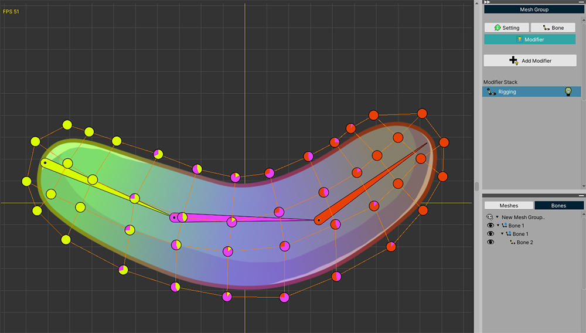
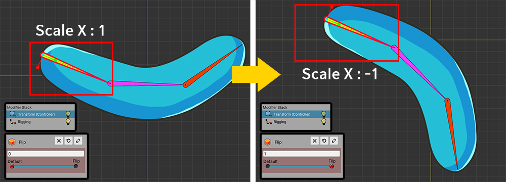
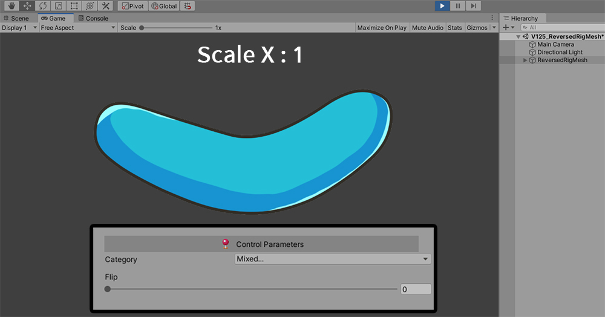
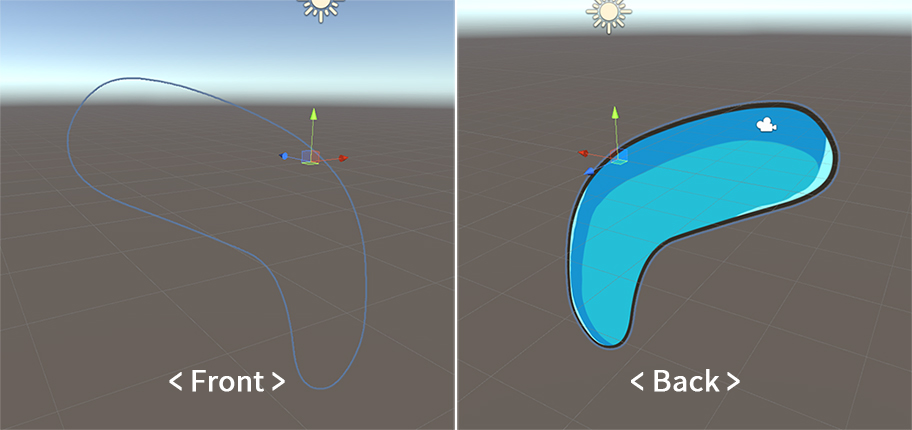
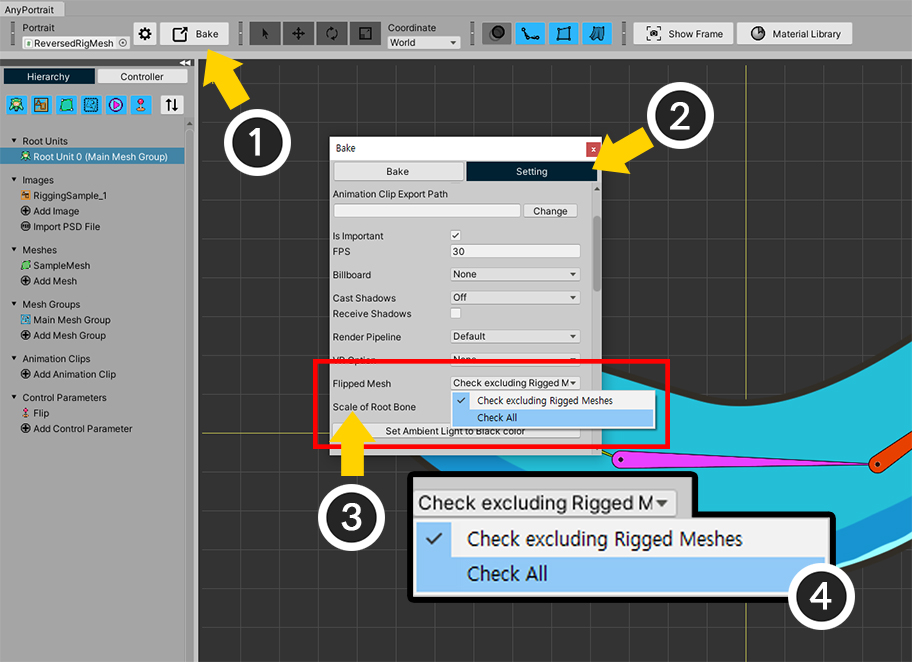

AnyPortrait > Manual > Reversed scale of the Rigged Mesh
Reversed scale of the Rigged Mesh
1.2.5
When a character created with AnyPortrait is delivered to the Unity scene, the character is composed of a combination of Single-sided MeshRenderers.
If the scale of the mesh is reversed or the GameObject is reversed, the backside of the mesh will be rendered.
However, if you haven't set up 2-sided rendering, the backside of the mesh will not be shown in the game.
(Reference: How to set up 2-sided rendering)
Luckily, AnyPortrait has a function to render properly even if the size of the mesh is reversed. (Reference: Reversed Mesh)
However, this feature is limited to not rigged meshes.
For meshes with rigging applied, you need to check whether the scale of the connected bones is all reversed, so there is a risk of performance degradation.
However, in some cases, it is necessary to invert the scale of the rigged meshes, so an option to check the reversed scale in AnyPortrait v1.2.5 has been added.
Using the option introduced on this page, it is possible to reverse the scale of the rigged meshes normally without applying 2-sided rendering.

We have prepared a simple mesh and bones to illustrate.
3 bones are connected to 1 mesh.

Among the three bones, let's invert the scale of the parent, which is the green bone, according to a control parameter.
The image on the left is the default state, and the image on the right is the state of the reversed scale.
Similarly, the scale of the rigged mesh has also been reversed.

Let's run it in the Unity scene after running Bake.
In the default state, the mesh will render normally.

If you change the value of the control parameter to make the state of the reversed bone scale, the mesh will not be rendered.

In fact, the mesh hasn't disappeared, it's rescaled so the backside is rendered.
However, the backside of the mesh is not shown by default, so the mesh appears to have disappeared.
Previously, to solve this problem, you need to set the mesh to be rendered on both sides (related page).
However, you can also use the option added in v1.2.5 to fix this problem.

Open AnyPortrait editor,
(1) Press the Bake button.
(2) Select the Setting tab.
(3) You can see that the value of the Flipped Mesh option is set to Check excluding Rigged Meshes.
(4) Change the option value to Check All.
- Check excluding Rigged Meshes : Reversed meshes are rendered normally, excluding rigged meshes.
- Check All : In all possible cases, reversed meshes will be normally rendered.

When you run Bake again and run the game, you can see the flipped mesh is rendered normally, even if bones are reversed
Precautions
-If you change the option to Check All, all rigging values are checked every frame, so performance may decrease.
-If only some of the bones rigged to the mesh are resized, the mesh may not render properly.